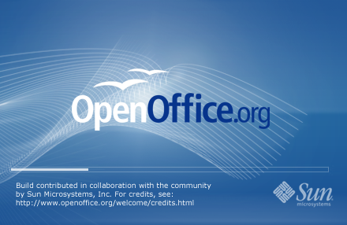

Vote on the OpenOffice.org 3.0 splash screen
OpenOffice.org 3.0 will get a new splash screen to reflect our new and fresh release, and the community has the final word on it. Several great proposals have been sent in, and we asked all community members to cast their vote. Together with the splash screen, two other design elements will be included, namely the Windows installer graphic, and the about box image.
And the winner is...
Jacek Adamkiewicz with his proposal 3!
Quick overview of proposals (in order of submission)
|
Proposals in detail (in order of submission)
1 Ivan Miskovic
Vector Gulls Splash 1
Vector Gulls Splash 2
Vector Gulls Splash 3
2 Stella Schulze
Final Black
Final Light
Final Light Blue
3 Johannes Bausch
Proposal 1
Proposal 2
Proposal 3
Proposal 4

Proposal 5
Proposal 6
Proposal 7
4 Jacek Adamkiewicz
Proposal 1
Proposal 2
Proposal 3
5 Andreas S.
Aqua Green Var. 1
Aqua Green Var. 2

Aqua Blue
